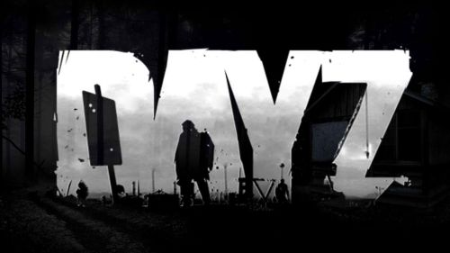

aaa
aaaaaa

Информация по сайту
Сервера DayZ
Сервера DayZ Epoch 1.0.5.1 NO CD
Сервер Maximum PVP Epoch 13-112555/1.0.5.1
Проще всего зайти на данный сервера, скачав наш Launcher Лаунчер необходимо поместить в папку с игрой. Карта — Черноруссь Особенности сервера: Разное Прицел включен Вид от 3го лица включен Возможность поставить метку на карту через ШИФТ, включена Отображение ника убийцы Самозаливка крови Снятия скинов с трупов игроков и ботов Система выбора скина и места спавна в зависимости от хумании Новый HUD с кнопками быстрого использования бинта(1), болеутоляющего(2), морфина(3) и крови(4)(+ беруши на кнопку 6) Менеджер групп, управляется через рацию(рации в луте у ботов) F1 просмотр правил и FAQ Настройка дальности прорисовки при помощи бинокля или дальномера(ПКМ по предмету) Огромная военная база охраняемая ботами(Секретный аэропорт) в центре базы стоят ящики с оружием и ценным лутом Добавлена возможность быстрой смены дополнительно оружия, работает так: Берёте оружие в руки, крутите колесиком и выбираете пункт красным цветом, оружие перемещается в рюкзак и становится вторичным.Берёте в руки основное оружие и теперь можете переключаться между ними кнопками Alt+F.Патроны не перемещаются. Добавлены военные объекты, 3 большие военные базы и 5 малых, расположение баз отмечено на карте Изменены цвета некоторых скрол меню, что бы выделялись из общего списка Добавлены графически предупреждения о правилах при входе в трейд зону Включен голосовой чат, разговор в синий канал запрещен, за это будет отниматься кровь. Метки на карте подписываются вашим ником Закрытые машины(с ключом) неактивные более 7 дней — открываются(становятся без ключа) Техника без ключей, не использованная более 3 дней — удаляется
Транспорт Буксировка транспорта(наземная и воздушная) Заправка(бесплатно)и починка(800и 400р) транспорта на заправках Возможность закрыть технику изнутри при наличии ключа Крафт вело и мото Что бы скрафтить велосипед или мотоцикл, нажмите ПКМ по набору инструментов Для крафта велосипеда нужны два колеса и запчасти, для крафта мотоцикла нужны 2 колеса, 2 запчастей, двигатель, бензобак и канистра с топливом. 250 единиц техники на карте Строительство Plot management(система управления плотом) Vector Building (Поворотное строительство) Snap Building pro (прилипание блоков при строительстве) Лимит построек увеличен до 700 Все постройки происходят в 1 шаг Трейды Переработанные трейд зоны с повышенным фпс Сейв зоны в трейдах Годмод для игроков и транспорта в сейв зонах(теперь любители пострелять издалека по тем кто в трейде, отсосут) Расширенная торговля(покупка в рюкзак и транспорт, сразу несколько предметов) Все торговцы переведены на рубли Создан тайный торговец, продающий оружие Mk16\Mk17 и готовые строй материалы(ворота\стены\большие кубы из песка\сетки\сараи и т.д.)А так же патроны к Mk16\Mk17 Торговцу авто в СС, добавлена новая техника Пред просмотр товаров у торговцев Установлены автоматы с едой и напитками Героям и бандитам добавлен Авто «Шакал» , БРДМ2 и т.д. с восстанавливающимися патронами
